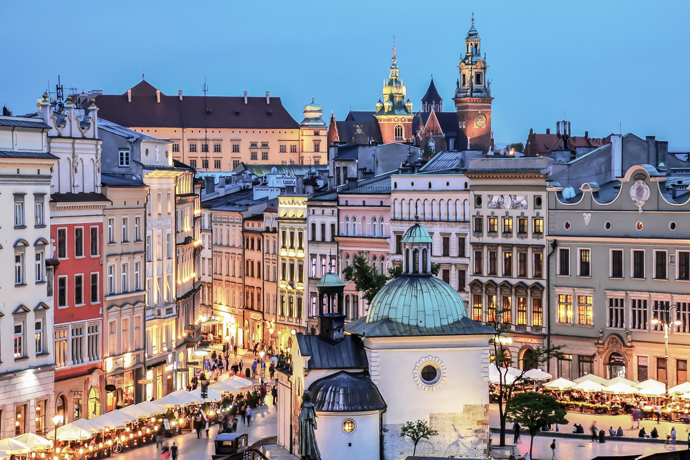

Kraków, Stołeczne Królewskie Miasto Kraków – miasto na prawach powiatu położone w południowej Polsce nad Wisłą, drugie co do liczby mieszkańców[1].
Formalna stolica Polski, miasto koronacyjne oraz nekropolia królów Polski. Od 1000 roku nieprzerwanie stolica diecezji krakowskiej
(jednej z pięciu w ówczesnej Polsce), a od 1925 archidiecezji i metropolii. Lokowany przed 1228 rokiem, ponownie w 1257 r.[5].
Od odzyskania niepodległości w 1918 r. miasto wojewódzkie (od 1999 r. siedziba władz województwa małopolskiego), jest także centralnym ośrodkiem metropolitalnym aglomeracji krakowskiej i Krakowskiego Obszaru Metropolitalnego. Kraków jest stolicą historycznej Małopolski.
Leży na obszarze Bramy Krakowskiej, Niecki Nidziańskiej i Pogórza Zachodniobeskidzkiego.
Jedziemy do Krakowa!
Dziś jedziemy do Krakowa
Każda dama już gotowa
By zobaczyć go od nowa
Znów jedziemy do Krakowa
Kamieniczek tu jest wiele
Piękne parki przy kościele
Miejsce spotkań co niedzielę
Kamieniczek tu jest wiele! Kalina Rokosz

Widok na Rynek Główny i Wawel
mapa
ciekawe miejsca
zabytki
sport
mapa
ciekawe miejsca
zabytki
sport
Nazwa rezerwatu
Powierzchnia
przedmiot ochrony
Bielańskie skałki
1,73 ha
spontaniczne procesy sukcesji biocenoz leśnych na skalistym, dawniej pozbawionym lasu terenie
Bonarka
2,29 ha
rezerwat geologiczny, uskoki geologiczno-tektoniczne, powierzchnie abrazyjne, odsłonięte utwory jurajskie